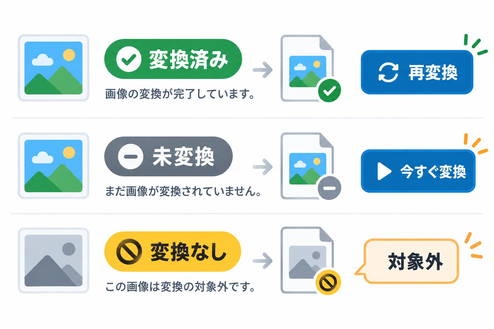
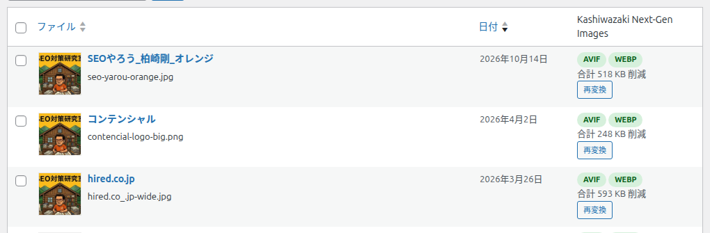

メディアライブラリ
メディアライブラリの一覧と画像の詳細画面で、画像ごとの変換状態を確かめ、1 枚ずつ変換できます。


どこに表示されるか
| 場所 | 表示 |
|---|---|
| メディア → ライブラリ（リスト表示） | 「Kashiwazaki Next-Gen Images」の列。グリッド表示には出ません。列は画面右上の「表示オプション」で隠せます |
| 画像の編集画面・メディアの詳細 | 「Kashiwazaki Next-Gen Images」の項目。JPEG・PNG・GIF・WebP の画像で、編集できる人にだけ表示されます |
状態の見方
| 表示 | 意味 | ボタン |
|---|---|---|
| AVIF / WEBP の緑のバッジと「合計 ◯ 削減」 | 作った形式と、全サイズ合計で減った容量 | 再変換 |
| 未変換 | まだ変換していません | 今すぐ変換 |
| 変換なし（理由） | 理由があって変換しませんでした（下の表） | 今すぐ変換 |
| 変換できず（理由） | 変換に失敗しました。赤いバッジは、作れた形式が 1 つも無いことを表します | 今すぐ変換 |
| 一部のサイズが未処理 | 時間切れで一部のサイズが残っています。少しあとで自動で続けます | — |
| 対象外の形式 | JPEG・PNG・GIF・WebP 以外のファイルです | — |
ボタン
今すぐ変換
この画像だけを変換します。
| 押したあと | 「処理中…」のあと、状態の表示が新しくなります。時間がかかる画像は、自動で続けます |
| 注意 | 「軽くならないため」などの理由で変換しなかった画像は、押しても変わりません。作り直すには「再変換」を使います |
再変換
この画像を作り直します。
| 管理者が押したとき | 作り直します（以前の失敗も試し直します） |
| 管理者以外が押したとき | 作り直しにはならず、「今すぐ変換」と同じ動きになります |
| 失敗したとき | ブラウザの警告が表示されます |
「変換なし」「変換できず」の理由
| 表示 | 意味 | 一括変換の「以前に失敗した画像も試す」で再試行 |
|---|---|---|
| 変換なし（軽くならないため） | 変換すると元より大きくなるため保存しませんでした | × |
| 変換なし（アニメーション画像） | 動く GIF・PNG・WebP は変換しません | × |
| 変換なし（画素数が上限超過） | 詳細設定の「変換する画像の最大サイズ」を超えています | × |
| 変換できず（メモリ不足） | サーバーのメモリが足りませんでした | ○ |
| 変換なし（sRGB 以外の色設定） | 色の設定を保ったまま変換できないため、色が変わるのを避けました | × |
| 変換なし（CMYK 画像） | 印刷用の色の画像は変換しません | × |
| 変換なし（劣化なしの設定のため。AVIF は劣化なしで作れません） | 「PNG・GIF は劣化なしで変換」がオンのため、PNG・GIF の AVIF は作りません | ×（設定を変えれば対象になります） |
| 変換なし（劣化なしの設定ですが、このサーバーは劣化なしの WebP を書き出せません） | サーバーの道具が劣化なしの WebP に対応していません | × |
| 変換なし（拡張子と中身が不一致） | ファイル名の拡張子と中身の形式が違います | × |
| 変換なし（画像として読めません） | 画像が壊れているか、大きさがわかりません | × |
| 変換できず（読み込み失敗） | 画像を読み込めませんでした | ○ |
| 変換なし（このサーバーが未対応） | このサーバーでは作れない形式です | × |
| 変換できず（元ファイルが無い） | 元の画像のファイルが見つかりません | × |
| 変換できず（出力の検証に失敗） | 作ったファイルの確認に失敗しました | ○ |
| 変換できず（エンジンのエラー） | 画像を作る道具でエラーが起きました | ○ |
| 変換できず（書き込み失敗） | フォルダに書き込めない、空き容量が足りないなど | ○ |
| 変換なし（同名の別の画像があるため） | 変換ファイルと同じ名前の別の画像があるため、上書きを避けました | × |
| 変換なし（作る形式がありません） | 作る形式が無い状態です（設定で WebP・AVIF がオフなど） | — |